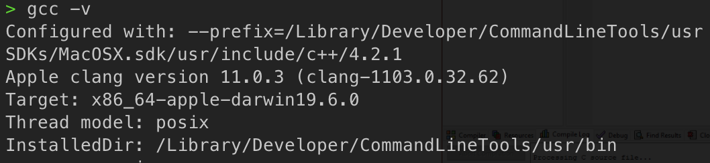
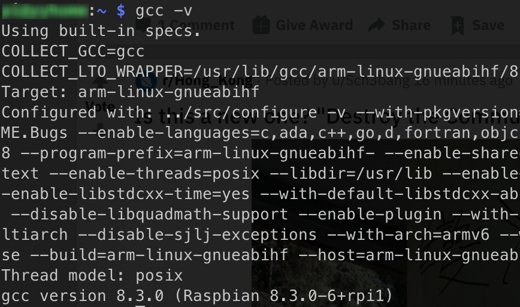
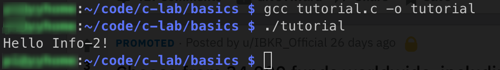
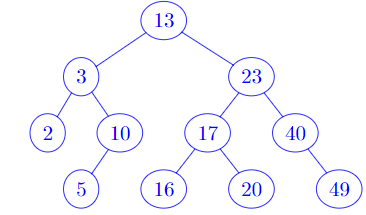

Preface
Welcome to the Informatics II (Data Structure and Algorithms) Cheatsheet!
What is this?
This cheatsheet aims to help students study the Informatics-II (data structure and algorithm) course at University of Zurich.
How it works?
When the TAs and Tutors are preparing for the exercises, they will put some notes into this collection.
If you met some problems that you think is necessary to be added into this cheatsheet, do not hesitate to propose it in the issues, or create a merge requests. By doing so, you can not only revise and remember the stuff, but also help other students understand it. In this process, TAs and Tutors will revise what you proposed and check if they are correct and if they are needed to be added.
Acknowledgement
Our warmest thanks to those who contribute to this cheatsheet (alphabetical order):
Next is you!
Installation of C Compiler
Just like in the Info-1 course, you will need a compiler to finish the exercises (and exams) for Info-2, but we need a compiler for C this time. In this tutorial, we will provide some instructions on how to set up your compiler, and how to use its basic functions.
Windows Users
Installation
If you are using Windows, we recommend you to use Dev-C/C++, which can be downloaded at https://sourceforge.net/projects/orwelldevcpp/. The installation are listed as below:
-
Download the installer. It should be some .exe file with the filename
Dev-cpp 5.11 TDM-GCC 4.92 setup.exe. -
Double click the installer, select your preferred language (we recommend you to use English, as in future we will demonstrate the process in English version).
-
Choose components. Make sure you have tick the
TDM-GCC 4.92 compiler, as illustrated below: -
Click Next and finish the installation process, as prompted.
-
Launch the Dev-C++ from your desktop icon or the menu, and you should be able to see the following window:

- Click the
File->New->Source Filebutton to create a new.cfile, and you can start programming! - When you write some code, you can save the source file to some folder on your local computer.
Run Your Program
Now that you've write some code in the new file you created, you can compile and run your program in the Dev-C++ environment. Now assume we have the code below:

You can then press F11, or click the Execute->Compile & Run button to compile and run your code. After you do it, you will see a window as below:

If you see the same thing with me, then congratulations, you are good to go!
Mac OS/Linux Users
If you are using Mac OS or Linux (e.g. Ubuntu, Fedora, etc), then you should already have gcc installed, which is one of the most popular c compiler. In order to check this, type gcc -v in your terminal.
On Mac OS, you should be able to see:

On Linux, you should be able to see:

As long as you are not receiving an ``Unknown Command```, you should be good to go, and you can then use any code editor, e.g. VSCode to edit your code, compile it with gcc and run it in terminal.
For example, assume we have the same C code named tutorial.c that simply prints the Hello Info-2!. Then we can compile and run it with:
gcc tutorial.c -o tutorial // compile
./tutorial // run
You should be able to see the following results:

If so, then you are good to go!
Compiler
Recommended Environments
During this course, we will use gcc as the default compiler for C. If you are using Mac OS or Linux, gcc should have been installed on your machine. If you are using Windows, you may need an IDE to compile and run your C code. For how to verify and install the environments, please refer to Installation.
Compile a Single Source File
gcc example.c -o example.run
Then we could run the executable file by ./example.run.
- The filename is considered as the input file of our compiler. It is passed to the compiler without any parameters.
- The parameter
-ospecifies the output executable file name. - Some other useful arguments:
-gAdds debugging symbols for use with gdb.-WallEnables all compiler warning messages.-pedanticCompiler enforces the specified C standard pedantically.-std=cxxSpecify a version of C/CPP (by replacing the xx) to compile against.
Example:

C basic data types
In the exercises, you will frequently see the following C data types.
| Type | Explanation | example |
|---|---|---|
| int | an integer with range (from −2,147,483,648 to +2,147,483,647) | int a = 10; |
| char | a character | char c = 'a'; |
| float | a decimal number | float grade = 5.50; |
| Double | a decimal numer | double pi = 3.1415926; |
In C, the data type of a variable should be defined before used. Although there are some way to convert one data type to another, type casting is not suggested.
Counterexample
(1) mixed data type
int a = 2;
float b = 2.0;
int c = a + b;
float d = a + b;
Since a and b have different data types, C complier will do data type casting for c and d. This is not suggested.
Solution: Make a and b the same data type.
float a = 2.0;
float b = 2.0;
folat c = a + b;
int a = 2;
int b = 2;
int c = a + b;
Operators
Operators are indispensable in programming. We list common and useful operators in C for your study in this course.
C Arithmetic Operators
An arithmetic operator performs mathematical operations such as addition, subtraction, multiplication, division etc on numerical values (constants and variables).
| Operator | Meaning of Operator |
|---|---|
| + | addition |
| - | subtraction |
| * | a decimal number |
| / | division |
| % | remainder after division (modulo division) |
example: Arithmetic Operators
#include <stdio.h>
int main()
{
int a = 11;
int b = 3;
int c;
c = a+b;
printf("a+b = %d \n",c);
c = a-b;
printf("a-b = %d \n",c);
c = a*b;
printf("a*b = %d \n",c);
c = a/b;
printf("a/b = %d \n",c);
c = a%b;
printf("Remainder when a divided by b = %d \n",c);
return 0;
}
C Relational Operators
Relational operators determine one condition is True(1) or False(0), usually used in a loop and if condition.
| Operator | Meaning of Operator | Example |
|---|---|---|
| == | equal | 1 == 1 is evaluated to 1 |
| > | greater than | int a; int b; a > b |
| < | Less than | 2 < 4 is evaluated to 1 |
| != | Not equal to | 7 != 2 is evaluated to 1 |
| >= | Greater than or equal to | 2 >= 8 is evaluated to 0 |
| <= | Less than or equal to | 0 <= -4 is evaluated to 0 |
example: relational operators
#include <stdio.h>
int main()
{
int a = 4, b = 7, c = 11;
printf("%d == %d is %d \n", a, b, a == b);
printf("%d == %d is %d \n", a, c, a == c);
printf("%d > %d is %d \n", a, b, a > b);
printf("%d > %d is %d \n", a, c, a > c);
printf("%d < %d is %d \n", a, b, a < b);
printf("%d < %d is %d \n", a, c, a < c);
printf("%d != %d is %d \n", a, b, a != b);
printf("%d != %d is %d \n", a, c, a != c);
printf("%d >= %d is %d \n", a, b, a >= b);
printf("%d >= %d is %d \n", a, c, a >= c);
printf("%d <= %d is %d \n", a, b, a <= b);
printf("%d <= %d is %d \n", a, c, a <= c);
return 0;
}
Functions
A function is a pointer to some code, parameterized by formal parameters, that may be executed by providing actual parameters. Functions must be declared before they are used, but code may be provided later. For example, a sqrt function that returns the given integer parameter \(n\) might be declared as:
int echo(int n) {
return n;
}
Strings
In C, there is no string data type. In practice, a string is an array of characters (char).
Terminating Character
A string is an array of characters with a terminating character '\0'.
Useful Functions
Assume that we have a string char str[]. The following function int len(char str[])calculates the length of a string.
int len(char str[]) {
int i;
while(str[i] != '\0') {
i++;
}
return i;
}
Input/Output
printf function
In C, printf is an format function that prints the output on the screen (standard output). According to different data types in C, the parameters in printf are different, see the examples below.
The the header file #include<stdio.h> needs to be included before use printf.
Table 1: printf for basic data types.
| data type | format | example |
|---|---|---|
int | %d | int i = 10; printf("%d", i); |
char | %c | char c = "A"; printf("%c", c); |
char[] | %s | char str[] = "Informatics-II" printf("%s", str) |
Table 2: The cursor control sequences for the printf command.
| data type | format |
|---|---|
\n | carriage return and newline |
\t | tab |
Pointers
In C, pointers are widely used to access variables in memory. Basic concepts of pointers will be explained.
Example
#include <stdio.h>
int main()
{
int i = 1;
int* p_i = &i; // pointer to int i
//show address of i and the pointer to i
printf("The address of i is %p \n", &i);
printf("The address of p_i is %p \n", &p_i);
// show vaue of i and the pointer to i
printf("The value of i is %d \n", i);
printf("The value of p_i is %p \n", p_i);
//show sizes of i and the pointer to i in memory
printf("The size of i is %zu bytes \n", sizeof(i));
printf("The size of p_i is %zu bytes \n", sizeof(p_i));
}
Sample output.
The address of i is 0x7ffee52736ac (you should have a different one)
The address of p_i is 0x7ffee52736a0 (you should have a different one)
The value of i is 1
The value of p_i is 0x7ffee52736ac (you should have a different one)
The size of i is 4 bytes
The size of p_i is 8 bytes
Use the %p formatting specifier to print addresses in hexadecimal. You should see something
like this: ”0xbfe55918”. The initial characters ”0x” tell you that hexadecimal notation is being used; the remainder
of the digits give the address itself. Use %f to print a floating value. Use the sizeof operator to determine the
memory size allocated for each variable, then use %zu to print it.
Malloc
Function Signature
ptr = (cast_type *) malloc (byte_size);
Ways of pointer instantiation and declaration
All examples below construct the same pointer but are syntactically different and some contain superfluous code.
Memory allocation
int *pointer = malloc(sizeof int);
int *pointer = malloc(sizeof *pointer); // better
Note that it is slightly cleaner to write malloc statements by taking the size of the variable pointed to by using the pointer directly. If we later rewrite the declaration of ptr the following, then we would only have to rewrite the first part of it:
float *pointer;
/* hundreds of lines of code */
pointer = malloc(sizeof( *pointer));
Type casting
int *pointer = malloc(sizeof *pointer);
int *pointer = (int *)malloc(sizeof *pointer);
In C, you don't need to cast the return value of malloc. The pointer to void returned by malloc is automagically converted to the correct type. However, if you want your code to compile with a C++ compiler, a cast is needed.
Simultaneous declaration and instantiation
int pointer* = malloc(sizeof *pointer);
int pointer*;
pointer = malloc(sizeof *pointer); // slightly better?
The two statements do exactly the same. Some people suggest that the issue about initializing the result of malloc() is that the allocation may fail.
Recommendation: Subroutine for "safe-malloc"
The official GNU docs suggest writing a subroutine that calls malloc and reports an error if the value is a null pointer, returning only if the value is nonzero. This function is conventionally called xmalloc.
void *xmalloc(size_t size)
{
void *value = malloc(size);
if (value == 0)
fatal("virtual memory exhausted");
return value;
}
TL;DR
For this course, it's enough to declare a pointer and assign memory to it like so:
int pointer*;
pointer = malloc(sizeof *pointer);
More sources
- Multiple one line assignments with malloc in c
- How to do one line assignment to malloc() arrays in C?
- Pointers in C 1
- Pointers in C 2
- C Pointers and Memory Allocation
Arrays
First of all, there is a difference between the usage of an array in pseudocode and the usage of an array in C. When it comes to pseudocode, we use position to describe the elements in an array, and the position starts at 1. While in C programming, we use indices to access the elements in an array, and the index starts at 0. It is important to learn this difference, and you need to be careful about this difference in your practise and your exam.
We take an array of integer as examples. The following also works for arrays of character, double numebr etc.
An array of integers in Pseudocode
In tasks of exercises and exams, you might see the description like "an array of Integer A[] with n integers;
an array of Integer A[0...n-1]".
scenario 1: an array of integer A[] with n integers
The array A[] is a general way to describe an array, and this array contains n integers. However, we don't know
what these n integer are.
scenario 2: A[0...n-1]
A[0...n-1] is equivalent to "an array of integer A[] with n integers 0, 1, 2, ...., n - 1".
More specifically, A[1] = 0, A[2] = 1, A[n] = n- 1. Remember that in pseudocode, position starts from 1.
One more example, A[0...n] is an array of n + 1 integers 0, 1, 2, ...., n - 1, n.
For both scenario, the following Pseudocode visits elements of the array A[] or A[0...n-1] from the
beginning of the array to the end. Note that the array A has to contain n elements.
for(int i = 1; i <= n; i++){
num = A[i] #access the element at position i.
}
An array of integers in C
In tasks of exercises and exams, you might see the description like "an array of Integer A[] with \( n \) integers".
Let's initialize an array of 4 integers(n = 4) as follows. In C, we have to know the number of elements of an array when we initialize it.
int A[] = {1, 2, 3, 4}
Remember that the index of an array in C starts from 0. A loop from the first element to the last element is
for(int i = 0; i <n; i++){
int num = A[i] // access the element at index i.
}
Stack
In slides, you can see the following pseudocode:
Algo: push(x)
S[t] = x;
t = t+1;
It is assumed that the stack S is a global variable, so S is not a paramater of push function.
In C, Algo: push(x) is implemented as follows.
#include <stdio.h>
/* global variable declaration */
int S[10];
int t = 0;
void push(int x){
S[t] = x;
t = t + 1;
return;
}
int main () {
/* local variable*/
int x = 1;
push(x);
return 0;
}
When using global variables, you need to be careful about which variables are called.
Trees
Trees in Computer Science is reversed to what we know. The Root sits at the top, while the leaves are in the bottom.
Binary Trees(BT)
A Binary Tree is a tree data structure in which each node has at most two children that are referred to as the left child and the right child.
Each node in the binary tree has an integer value. However, all values in a binary tree are not sorted. Next, you will see the binary search tree that values of all nodes are sorted in some way.
Binary Search Trees(BST)
A Binary Tree with the following properties:
- Let x be a node in a binary tree.
- If y is a node in the left subtree of x then y.key ≤ x→key
- If y is a node in the right subtree of x then x→key ≤ y.key
Let's look at an example of a binary search tree:

search in a binary tree
We use the properties of a binary search for searching an element, i.e. an integer. The search starts from the root and the search goes to either the left subtree or the right subtree based on the key.
Example, search 20 in the binary tree above.
- Root is the node with key 13.
- Key 13 is less than 20, go to the right subtree. The key of the right subtree is 23.
- Key 23 is more than 20, go to the left subtree. The key of the left subtree is 17.
- Key 17 is more than 16, go to the right subtree. The key of the right subtree is 16
- Search is done. Alternatively, the search is done without finding the 16 if there is no subtree to be explored.
There is no guarantee for the search in a binary search tree, because we don't know the height of a binary search tree, which could be N for the worst case, where N is the number of items in the binary search tree.
Red Black Trees:
Self Balancing Binary search Trees, guarantee a search performance of O(log(n)). Look at slides and Red Black Tree section for further information
Red Black Trees
This article clarifies what is taught about red black tree in the lecture.
Red Black Trees is a form of self balancing Binary Search Trees, that any given time, has height at most 2log(n+ 1).
The root is always Black.
In this data structure, the root of a Red Black Tree is always black. This is a property of the red black tree that is taught in the lecture. For red black tree that you encounter in exercises and exams, the root is must always be black to be valid.
Further to understanding Binary Search Trees, I would reccomend first looking at the following 2 videos followed by any further material u find suitable. Although some variations in the design and explanation of the trees, if you understand their properties and how they work, u will be able to understand the questions asked in the exercises and the exams.
Initial reccomended videos (combined with lecture material):
Graphs
Within this section, few further explanations will be added to aid in the understanding of Graphs as part of this module.
A visualisation that personally helps me to understand graphs is imagining vertices as physical locations and the edge cost to be the time distance between them(so a form of a map for example).
Most graphs are defined as a slight alteration of the following rules.
A graph is made up of two sets called Vertices and Edges. The Verticies are drawn from some underlying type, and the set may be finite or infinite. Each element of the Edge set is a pair consisting of two elements from the Vertices set. Graphs are often depicted visually, by drawing the elements of the Vertices set as boxes or circles, and drawing the elements of the edge set as lines or arcs between the boxes or circles. There is an arc between v1 and v2 if (v1,v2) is an element of the Edge set. Adjacency. If (u,v) is in the edge set we say u is adjacent to v (which we sometimes write as u ~ v).
For example the graph drawn below

Has the following parts.
The underlying set for the Verticies set is the integers.
The Vertices set = {1,2,3,4,5,6}
The Edge set = {(6,4),(4,5),(4,3),(3,2),(5,2),(2,1),(5,1)}
Graphs can be:
Undirected Graphs : All edges are two way, so A to B with cost 3 means there is also a path from B to A with the same cost.
Directed Graphs : Edges are one way, so A to B with cost 3 does not mean there is a path from B to A.
Unweighted: Traversing through all edges has the same cost, commonly assumed to be 1.
Weighted: There is a cost for traversal for each edge, hence from traversal from A to B the cost of traversal is equal to the weight of that edge and possibly a different weight from B to C.
Common Problems in Graph Theory (Mentioned in the lecture):
Connectivity: If C is reachable from A. Solved by graph traversal algorithms, BFS or DFS.
Shortest Path(and multiple variations): Lowest total cost to C from A. Solved by shortest path algorithms (Djikstra for example). For Unweighted graphs BFS can also be used.
Minimum Spanning Tree: Connect all the vertices with edges with the minimum total weight(edge cost). Solved with Kruskal or Prim Algorithms.
There are a lot of resources available both in the lecture and online for these kind of problems and examples of what can be represented through a graph.
Algorithms Analysis
Complexity of Search Algorithms
Linear Search ->
Binary Search ->
Data Strucutres
Stack: Push, Pop, Top ->
Queue: Insert, Remove ->
Set, Hashmap: Insert, Contains -> . Bad hashing functions could increase up to
Binary Search Trees: Insert, Delete, Search -> . In theory, it usually performs a bit worse than
Red Black Trees: Insert, Delete, Search , guarantee by the Red Black Property.
Sorting
Insertion Sort, Bubble Sort ->
Quick Sort -> but typically towards
Merge Sort ->
Theoretical Limit for Comparison Based Sorting is . More cool things about sorting at sorting
Graph Theory
Let V for Vertices, E for Edges.
DFS, BFS -> Full Search is
Djikstra -> Single Source SP is
Master Theorem
If a recurrence relation is defined as where
- asymptotically positive.
Then there are three cases:
- Case 1: for some , i.e. grows polynomially slower than . In this case, the work at leaves dominates: .
- Case 2: , i.e. and are asymptotically the same. In this case, the work is evenly distributed: .
- Case 3: for some , i.e. grows polynomially faster than . In this case, the work at root dominates: .
Sorting
Merge Sort
Pseudo Code
A[1...n] refers an array of size n